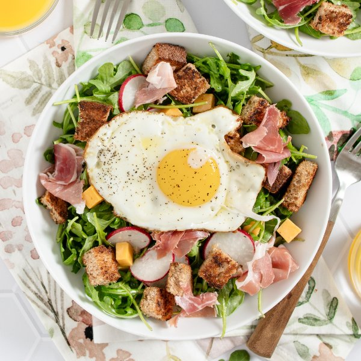

Arugula Breakfast Salad with Fried Egg, Prosciutto, Cheddar & Croutons

Total Time
20 min
Nutrition (Per Serving)
434.7 kcalCalories
21.2 gProtein
19.8 gCarbs
30.7 gFat
Full nutrition table
| Calories | 434.7 kcal |
| Total fat | 30.7 g |
| Saturated fat | 9.8 g |
| Trans fat | 0.4 g |
| Cholesterol | 202.6 mg |
| Sodium | 683.5 mg |
| Carbohydrates | 19.8 g |
| Fiber | 3.5 g |
| Sugars | 5.4 g |
| Protein | 21.2 g |
| Potassium | 428.9 mg |
| Calcium | 340.6 mg |
| Iron | 2.6 mg |
| Vitamin A | 526.9 IU |
| Vitamin C | 13.8 mg |
| Vitamin D | 42.9 IU |
Cookware
Ingredients
- 1 (5 oz) pkgbaby arugula
- ½ (8 oz) blockcheddar cheese
- 4eggs
- 4 slicesprosciutto
- 1 bunchradish
- 4 sliceswhole grain bread
- black pepper
- extra virgin olive oil
- garlic powder
- honey
- salt
- white wine vinegar
Steps
- Preheat a large skillet over medium-high heat.
- While the skillet heats up, cut bread into 1-inch cubes. Place in a medium bowl, drizzle with oil, and season with spices; toss to coat.4 slices whole grain bread
4 tsp extra virgin olive oil
⅛ tsp garlic powder
⅛ tsp salt
⅛ tsp black pepper - Once the skillet is hot, add bread cubes and cook, stirring occasionally, until the croutons are golden and toasted, 3-4 minutes. Return to the bowl. (Reserve skillet for later use.)
- Meanwhile, place additional oil, vinegar, honey, salt, and pepper in another medium bowl. Whisk to combine the dressing and set aside.4 tsp extra virgin olive oil
2 tsp white wine vinegar
1 tsp honey
¼ tsp salt
¼ tsp black pepper - Return the skillet to medium-high heat.
- Once the skillet is hot, add oil and swirl to coat the bottom. Gently crack eggs into the skillet and cook until the tops of the whites are set but the yolks are still runny, about 4 minutes. Remove from heat and season with salt and pepper.4 tsp extra virgin olive oil
4 eggs
⅛ tsp salt
⅛ tsp black pepper - While the eggs are cooking, wash, dry, trim, and thinly slice radishes. Add to the bowl with the dressing.1 bunch radish
- Wash and dry arugula (skip if it came pre-washed). Add to the bowl.1 (5 oz) pkg baby arugula
- Small dice cheese. Add to the bowl, along with the croutons, and toss to combine the salad.½ (8 oz) block cheddar cheese
- Chop or tear prosciutto into bite-sized pieces.4 slices prosciutto
- To serve, divide salad between plates or bowls; top with prosciutto and eggs. Enjoy!